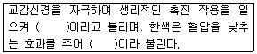
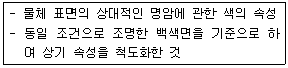
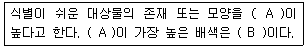
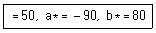

컬러리스트산업기사 (2016-08-21 기출문제)
1과목: 색채심리
1. 머릿속에 고정관념으로 인식되어 있고 색의 연상과 상징에 의해서 나타나는 것은?
- 기억색
- 항상성
- 착시
- 대비색
(정답률: 91%)

2. 바닷가 도시, 분지에 위치한 도시의 집합주거 외벽의 색채계획 시 고려사항이 아닌 것은?
- 기후적, 지리적 환경
- 건설사의 기업색채
- 건축물의 형태와 기능
- 주변 건물과 도로의 색
(정답률: 90%)
3. 중국에서는 황제를 상징하는 색이지만 유럽에서는 배반을 상징하는 색은?
- 청색
- 자색
- 황색
- 백색
(정답률: 92%)
4. 색채의 심리적 반응을 고려한 색채적용에 대한 설명이 옳은 것은?
- 안전 깃발과 구급상자는 주황색을 사용한다.
- 병원의 수술복은 음성잔상 때문에 청록색을 사용한다.
- 영업직의 환경색은 의식을 활발하게 하기 위해 한색을 사용한다.
- 화장실 픽토그램의 유목성을 높이기 위해 검정색을 사용한다.
(정답률: 83%)
5. 정보로서의 색의 역할에 대한 설명이 틀린 것은?
- 제품의 차별화와 색채연상효과를 높이기 위해 민트향이 첨가된 초콜릿 제품의 포장을 노랑과 초콜릿색의 조합으로 하였다.
- 서양문화권에서 흰색은 순결한 신부를 상징하지만, 동양에서는 죽음의 색으로서 장례식을 대표하는 색이다.
- 국제적 언어로서 파랑은 장비의 수리 및 조절 등 주의신호에 쓰인다.
- 스포츠 경기에 참가한 한 팀을 쉽게 구별할 수 있도록 운동복 색채를 선정함으로 경기의 효율성과 관람자의 관전이 쉽도록 돕는다.
(정답률: 72%)
6. 국가별, 문화별 선호색과 상징에 대한 설명 중 틀린 것은?
- 사우디아라비아, 이란 등은 초록을 신성시한다.
- 우리나라 소복의 흰색은 죽음을 상징한다.
- 국가나 지역에 관계없이 파랑에 대한 선호는 거의 일치하는 편이다.
- 국가와 문화에 상관없이 선호색은 같은 상징을 담고 있다.
(정답률: 81%)
7. 색채 조절에 대한 심리효과를 이용한 것으로 틀린 것은?
- 실내온도가 높은 작업장에서는 한색계통을 주로 사용한다.
- 북향의 방에는 따뜻한 색 계통을 사용하는 것이 효과적이다.
- 보라는 혈압을 낮게 하고, 빨강의 보색잔상을 막아주므로 병원 내의 색채로 적당하다.
- 하양(위), 회색(중간), 검정(아래)을 순서대로 세로로 배열하면 안정감이 느껴진다.
(정답률: 95%)
8. 색채계획 및 디자인 프로세스를 조사·기획 / 색채계획·설계 / 색채관리의 3단계로 분류 시, 조사·기획단계에 해당하는 것은?
- 시장현황 조사, 콘셉트 설정
- 색채배색 안 작성, 색견본 승인
- 시뮬레이션 실시, 색채관리
- 모형 제작, 색채 구성
(정답률: 94%)
9. 의미척도법(SD：semantic differential method)의 설명으로 틀린 것은?
- 미국의 색채 전문가 파버 비렌이 고안하였다.
- 반대의미를 갖는 형용사 쌍을 카테고리 척도에 의해 평가한다.
- 제품, 색, 음향, 감촉 등 다양한 대상의 인상을 파악하는 방법으로 많이 사용되고 있다.
- 의미공간을 효율적으로 정의하기 위해서는 그 공간을 대표하는 차원의 수를 최소로 결정할 필요가 있다.
(정답률: 51%)
10. 색과 제품의 연결이 가장 합리적인 것은?
- 자동차의 빠른 속도를 강조하려면 저채도의 색을 적용하는 것이 효과적이다.
- 방화가 의심되는 곳을 알리기 위해 녹색의 표지판을 사용하는 것이 효과적이다.
- 자연주의를 지향하는 제품에는 녹색이나 갈색을 사용하는 것이 효과적이다.
- 무거운 물품의 포장은 심리적으로 가볍게 느낄 수 있도록 저명도의 색을 사용하는 것이 효과적이다.
(정답률: 86%)
11. 혈압을 내려주고 긴장을 이완시켜 불면증에 효과가 있다고 알려진 색채는?
- 연두
- 노랑
- 하양
- 파랑
(정답률: 63%)
12. 색채와 미각에 대한 설명 중 잘못된 것은?
- 밝은 명도의 색은 식욕을 일으킨다.
- 청색은 식욕을 반감시킨다.
- 빨강은 식욕을 증진시킨다.
- 주황은 식욕을 증진시킨다.
(정답률: 78%)
13. 보기의 빈 칸에 들어갈 말을 순서대로 바르게 대응시킨 것은?

- 음(陰)의 색, 양(陽)의 색
- 흥분색, 진정색
- 수축색, 팽창색
- 약한 색, 강한 색
(정답률: 94%)
14. 색과 형태의 연구에서 원을 의미하는 색채에 대한 설명으로 옳은 것은?
- 우리나라 방위의 표시로 남쪽을 상징하는 색이다.
- 4, 5세의 여자아이들이 선호하는 색채이다.
- 충동적인 감정을 일으키는 색채이다.
- 이상, 진리, 젊음, 냉정 등의 연상언어를 가진다.
(정답률: 82%)
15. 색채정보 수집방법으로 가장 용이한 표본조사법의 표본 추출방법이 틀린 것은?
- 표본은 특정조건에 맞추어 추출한다.
- 표본의 선정은 올바르고 정확하며 편차가 없는 방식으로 한다.
- 표본선정은 연구자가 대규모의 모집단에서 소규모의 표본을 뽑아야 한다.
- 표본은 모집단을 모두 포괄할 목록을 반드시 가지고 있어야 한다.
(정답률: 28%)
16. 난색과 한색의 심리적 효과에 대한 설명 중 옳은 것은?
- 한색：후퇴색
- 난색：단파장
- 한색：장파장
- 난색：수축색
(정답률: 83%)
17. 휴식을 요하는 환자나 만성 환자와 같이 장기간 입원해야 하는 환자병실에 적합한 색은?
- 오렌지색, 노란색
- 노란색, 초록색
- 빨간색, 오렌지색
- 초록색, 파란색
(정답률: 86%)
18. 도시와 그 지역의 자연 환경색채가 옳게 연결된 것은?
- 그리스 산토리니 － 자연친화적 살구색
- 스위스 알프스 － 고유 석재의 회색
- 일본 동경 － 일본 상징의 쪽색
- 독일 라인강변 － 지붕의 붉은색
(정답률: 66%)
19. 칸딘스키(Kandinsky)가 제시한 형태연구의 3가지 요소가 아닌 것은?
- 삼각형
- 사각형
- 원
- 다각형
(정답률: 74%)
20. 색채의 계절연상과 배색에 대한 이론 중 틀린 것은?
- 봄 － 진한 톤으로 구성한다.
- 여름 － 원색과 선명한 톤으로 구성한다.
- 가을 － 풍요로움을 상징하는 주황, 갈색으로 구성한다.
- 겨울 － 차갑고 쓸쓸함을 나타내는 흰색, 회색으로 구성한다.
(정답률: 92%)
2과목: 색채디자인
21. 생태학적 디자인의 중요개념으로 지속가능한 개발(sustainable development)이 의미하는 것은?
- 기술을 지속적으로 사용하여 자연을 보존한다는 의미
- 자연이 먼저 보존되고 인간과 환경이 조화되는 개발을 의미
- 기술을 지속적으로 발전시켜 인간 사회를 개발시킨다는 의미
- 인간, 기술, 자연을 지속적으로 개발한다는 의미
(정답률: 60%)
22. 생태학적 디자인 원리로 틀린 것은?
- 환경친화적인 디자인
- 리사이클링 디자인
- 에너지 절약형 디자인
- 생물학적 단일성을 강조하는 디자인
(정답률: 84%)
23. 바우하우스 교육과정 단계를 바르게 나열한 것은?
- 공예교육 － 구조교육 － 건축교육
- 예비교육 － 공작교육 － 건축교육
- 공예교육 － 기술교육 － 건축교육
- 예비교육 － 이론교육 － 건축교육
(정답률: 37%)
24. 디자인의 국제주의(Internationalism)가 지향해온 일반적인 특성으로 틀린 것은?
- 이상주의
- 모더니즘 디자인
- 보편성
- 표현성
(정답률: 27%)
25. 디자인 조형요소에서 선에 대한 설명으로 틀린 것은?
- 점의 속도, 강약, 방향 등은 선의 동적 특성에 영향을 끼친다.
- 직선이 가늘면 예리하고 가벼운 표정을 가진다.
- 직선은 단순, 남성적 성격, 정적인 느낌이다.
- 쌍곡선은 속도감을 주고, 포물선은 균형미를 연출한다.
(정답률: 82%)
26. 미용색채에서 화려하고 활동적이며 적극적인 이미지를 연출하기에 좋은 립스틱의 색조는?
- 비비드(vivid) 색조
- 덜(dull) 색조
- 다크 그레이쉬(dark grayish) 색조
- 라이트(light) 색조
(정답률: 88%)
27. 색채계획 시 디자인 대상에 액센트를 주어 신선한 느낌을 만드는 포인트 같은 역할을 하는 색은?
- 주조색
- 보조색
- 강조색
- 유행색
(정답률: 89%)
28. 광고 대행사 직원으로서 클라이언트(광고주)와 대행사의 사이에서 마케팅에 관련된 내용을 입안하고 클라이언트의 의도를 전하며, 중간매개의 역할을 하는 직책은?
- AD(art director)
- AE(account executive)
- AS(account supervisor)
- GD(graphic designer)
(정답률: 48%)
29. 디자인 사조에 관한 설명이 틀린 것은?
- 미니멀리즘 － 순수한 색조대비와 강철 등의 공업재료의 사용
- 해체주의 － 분석적 형태의 강조를 위한 분리채색
- 포토리얼리즘 － 원색적이고 자극적인 색, 사진과 같은 극명한 화면구성
- 큐비즘 － 기능과 관계없는 장식 배제
(정답률: 53%)
30. 다음 사조와 관련된 대표적인 작가의 연결이 틀린 것은?
- 데스틸：피에트 몬드리안, 테오 반 데스부르크
- 미래파：필리포 토마소 마리네티, 카를로 카라
- 분리파：구스타프 클림트, 요젭 호프만
- 큐비즘：파블로 피카소, 앙리 마티스
(정답률: 36%)
31. 디자인의 조형요소 중 내용적 요소가 아닌 것은?
- 목적
- 기능
- 의미
- 재료
(정답률: 81%)
32. 조형요소 중 면에 대한 설명으로 옳은 것은?
- 소극적인 면은 점의 확대, 선의 이동, 너비의 확대 등에 의해 성립된다.
- 소극적인 면은 종이나 판으로 입체화된 면이 만들어진다.
- 무정형의 면은 도형의 배후에 있어 도형을 올려놓은 큰 면, 즉 도형 대 바탕의 관계로서 무정형은 무형태를 뜻한다.
- 적극적인 면은 공간에 있어서 입체화된 점이나 선에 의해서도 성립된다.
(정답률: 33%)
33. 다음 중 디자인의 개념으로 가장 옳은 것은?
- 유행에 따른 미를 추구하는 것
- 미적, 독창적 가치를 추구하는 것
- 경제적, 실용적 가치를 추구하는 것
- 미적, 실용적 가치를 계획하고 표현하는 것
(정답률: 80%)
34. 하나의 상품이 특정 제조업체의 제품임을 나타내는 심벌마크, 명칭, 회사명, 디자인을 총괄하는 의미로서 흔히 상품명이라고 불리어지는 것은?
- naming
- brand
- C.I.
- concept
(정답률: 48%)
35. 디자인 프로세스와 색채계획에 대한 설명 중 틀린 것은?
- 제품디자인은 시장상황 분석을 통한 조사의 결과를 바탕으로 전개되며 이 단계에서 경쟁사의 색채분석 및 자사의 기존제품색채에 관한 생산과정과 색채분석이 실행된다.
- 제품디자인은 실용성과 심미적 감성 그리고 조형적인 요소를 모두 갖도록 설계되며 제품색채계획은 이들 중 특히 심미성과 조형성에 관계된다.
- 제품에 사용된 다양한 소재에 맞추어 주조색을 정하고 그 성격에 맞춘 여러 색을 배색하는 색채디자인 단계에서 디자이너의 개인적 감성과 배색능력이 매우 중요시된다.
- 색채의 시제품 평가단계에서는 색채의 재현과 평가환경 등 여러 사항을 고려하여 제품의 기획단계와 일체성을 평가한다.
(정답률: 65%)
36. 독자의 궁금증이나 호기심을 유발시켜 소구하는 광고 방법은?
- 기업광고
- 티저광고
- 기획광고
- 키치광고
(정답률: 82%)
37. 제품디자인을 공예디자인과 구분 짓는 가장 중요한 요인으로 옳은 것은?
- 복합재료의 사용
- 대량생산
- 판매가격
- 제작기간
(정답률: 85%)
38. 동세와 관련되어 반복의 근거를 두며 다른 재료들과 대비를 이루는 것으로 옳은 것은?
- 질감과 형태
- 리듬과 강조
- 명암과 색채
- 율동과 균형
(정답률: 65%)
39. 제품디자인의 방법과 가장 거리가 먼 것은?
- 형태와 심미성
- 서비스의 배려
- 경제성의 배려
- 기능의 배려
(정답률: 86%)
40. 만화 영화의 제작 시 기획단계에서 2차원적 작업으로 전체적인 구성을 잡고, 그리는 과정은?
- Checking
- Timing work
- Painting
- Story board
(정답률: 86%)
3과목: 섹채관리
41. 염료와 비교하여 안료의 일반적인 특성 중 옳은 것은?
- 물에 잘 녹는다.
- 대체로 투명하다.
- 은폐력이 크다.
- 착색력이 강하다.
(정답률: 55%)
42. 프린터의 해상도 표기법과 사용 색채가 옳게 짝지어진 것은?
- lpi / 시안, 마젠타, 블루
- dpi / 시안, 마젠타, 옐로우
- ppi / 마젠타, 옐로우, 블랙
- dpi / 레드, 그린, 블루
(정답률: 73%)
43. 음식색소(식용색소)에 대한 설명이 틀린 것은?
- 천연색소, 인공색소가 모두 사용될 수 있다.
- 식용색소에서 가장 중요한 조건은 유독성이 없어야 한다.
- 미량의 색료만 첨가하는 것이 보통이며 무게비율로 0.⑤％에서 0.1％ 정도이다.
- 현재 우리나라는 과일주스, 고춧가루, 마가린에서 사용이 금지되어 있다.
(정답률: 32%)
44. 분광광도계의 구조를 구성하는 요소 중, 내부에 반사율이 높은 백색코팅을 한 구체이다. 내부의 휘도는 어느 각도에서든지 일정하며, 시료표면에서 반사되는 빛을 모두 포획하여 고른 조도로 분포되게 하는 것은?
- 광원
- 적분구
- 분광기
- 수광기
(정답률: 34%)
45. CCM 시스템을 이용하여, 최소 2개 이상의 기준 광원 하에서 기준샘플과 동일해 보이는 색을 만들기 위한 색료 조합을 예측하고자 할 때 CCM 시스템에 반드시 포함되어야 하는 요소가 아닌 것은?
- 최적의 컬러런트 조합
- 컬러런트 데이터베이스
- CIE 표준광원 연색 지수 계산
- 광원 메타메리즘 정도 계산
(정답률: 30%)
46. 적합한 색료를 선택하는 데 있어 염두에 두어야 할 사항으로 가장 거리가 먼 것은?
- 착색비용
- 작업공정의 가능성
- 컬러 어피어런스
- 구입일정과 장소
(정답률: 84%)
47. 해상도에 대한 설명이 옳은 것은?
- 픽셀 수가 동일한 경우 이미지가 클수록 해상도가 높다.
- 픽셀 수는 이미지의 선명도와 질을 좌우한다.
- 비트 수는 각 픽셀에 저장되는 컬러 정보의 양과 관련이 없다.
- 사진의 이미지를 확대해 보면 거칠어지는데 이는 해상도가 높아졌기 때문이다.
(정답률: 82%)
48. 분포온도가 약 2856K로 상대 분광분포를 가진 광이며, 백열전구로 조명되는 물체색을 표시할 경우에 사용하는 광원은?
- 표준광 A
- 표준광 B
- 표준광 C
- 표준광 D
(정답률: 81%)
49. 광원색의 측정방법 중 X, Y, Z 혹은 X0, Y10, Z10를 직접 지시값으로 주는 측정기기는?
- 주사형 분광복사계
- 배열검출기형 분광복사계
- 3자극치 직독식 광원색체계
- 코사인 응답기
(정답률: 61%)
50. 색료 데이터의 정보에 기술되지 않는 것은?
- 안료 및 염료의 화학적인 구조
- 활용 방법
- C. I. number에 따른 회사별 색료 차
- 제조사의 이름과 판매 업체
(정답률: 40%)
51. 운영체제와 소프트웨어의 범용적인 컬러 관리시스템을 만들 목적으로 설립된 국제단체는?
- ISO(International Standard Organization)
- NIST(National Institute of Standards and Technology)
- CIE(Commission Internationale de lʹEclairage)
- ICC(International Color Consortium)
(정답률: 46%)
52. 상관색온도에 대한 설명으로 옳은 것은?
- 촛불의 색온도는 12000K 수준이다.
- 정오의 태양광은 7500K 수준이다.
- 상관색온도는 광원색의 3자극치 X, Y, Z에서 구할 수 있다.
- 모든 6500K 광원은 표준광 D65분광 분포를 가진다.
(정답률: 42%)
53. 디지털 컬러에서(C, M, Y) 값이(255, 0, 255)로 주어질 때의 색채는?
- red
- green
- blue
- black
(정답률: 74%)
54. 연색성과 관련된 설명이 틀린 것은?
- 광원의 분광 분포가 고르게 연결된 정도를 말한다.
- 흑체복사를 기준으로 할 때 형광등이 백열등 보다 연색성이 떨어진다.
- 연색평가지수로 CRI가 사용된다.
- 연색지수의 수치가 0에 가까울수록 기준광과 비슷하게 물체의 색을 보여준다.
(정답률: 48%)
55. 다음 중 좋은 염료로서의 역할이 아닌 것은?
- 염색 시 피염제와 화학적인 반응이 있어야 한다.
- 세탁 시 씻겨 내려가지 않아야 한다.
- 분자가 직물에 잘 흡착되어야 한다.
- 외부의 빛에 대하여 안정적이어야 한다.
(정답률: 78%)
56. 도장하고자 하는 표면에 도막을 형성시켜 안료를 고착시켜주는 역할을 하는 것은?
- 컬러런트
- 염료
- 전색제
- 컴파운드
(정답률: 77%)
57. 육안 검색 시 측정 환경에 대한 설명으로 틀린 것은?
- 유리창, 커튼 등의 투과 광선을 피한다.
- 환경색에 영향을 받지 않도록 한다.
- 자연광일 경우 해가 지기 직전에 측정하는 것이 좋다.
- 직사광선을 피한다.
(정답률: 69%)
58. 평판스캐너와 디지털카메라의 특성에 대한 설명이 틀린 것은?
- 평판스캐너는 이미지나 문자 자료를 컴퓨터가 처리할 수 있는 형태로 정보를 변환하여 입력할 수 있는 장치이다.
- 일반적으로 디지털카메라는 본체에 전용 디스플레이를 갖추고 있으므로 별도의 현상이나 인화과정 없이 촬영 후 바로 사진을 확인할 수 있다.
- 평판스캐너는 디지털 데이터를 비트맵 데이터로 저장하고, 디지털 카메라는 벡터 데이터로 저장한다.
- 평판스캐너의 대상은 일정한 위치에 고정되어 있고, 디지털 카메라의 대상은 그렇지 않다.
(정답률: 58%)
59. 측색 데이터를 사용하여 시료색을 목표색으로 유도해 나가는 조색 방법은?
- 자극치 직독 방법
- 등간격 파장 방법
- 편색 파장 방법
- 선정 파장 방법
(정답률: 42%)
60. CCM의 활용 효과가 아닌 것은?
- 색채의 균일성
- 비용절감
- 작업속도 향상
- 주변색의 색채변화 예측
(정답률: 65%)
4과목: 색채지각의이해
61. 병치 혼색의 예로 옳은 것은?
- 날실과 씨실로 짜여진 직물
- 무대 조명
- 팽이와 같은 회전 원판
- 물감의 혼합
(정답률: 68%)
62. 영·헬름홀쯔의 색지각설에 대한 설명으로 틀린 것은?
- 빨강과 파랑의 시세포가 동시에 흥분하면 마젠타의 색각이 지각된다.
- 녹색과 빨강의 시세포가 동시에 흥분하면 노랑의 색각이 지각된다.
- 우리 눈의 망막 조직에는 빨강, 녹색, 파랑의 시세포가 있어 색지각을 할 수 있다.
- 색채의 흥분이 크면 어둡게, 색채의 흥분이 작으면 밝게, 색채의 흥분이 없어지면 흰색으로 지각된다.
(정답률: 76%)
63. 일반적으로 동시대비가 지각되는 조건과 거리가 먼 것은?
- 자극과 자극 사이의 거리가 멀어질수록 대비효과는 약해진다.
- 색차가 클수록 대비 현상은 강해진다.
- 자극을 부여하는 크기가 작을수록 대비효과가 작아진다.
- 동시대비 효과는 순간적으로 일어나므로 장시간 두고 보면 대비효과는 적어진다.
(정답률: 42%)
64. 눈에 비쳤던 자극을 치워버려도 색의 감각은 곧 소멸하지 않고 여운을 남긴다. 자극이 없어지고 잠시 지나면 나타나는 시각의 상은?
- 보색
- 착시
- 대립
- 잔상
(정답률: 84%)
65. 색광의 3원색이 아닌 것은?
- 빨강
- 초록
- 파랑
- 노랑
(정답률: 80%)
66. 색채의 경연감에 대한 설명 중 옳은 것은?
- 페일(pale) 톤은 딱딱한 느낌으로 긴장감을 준다.
- 한색계열의 색은 부드러워 보이고 평온하고 안정된 기분을 준다.
- 경연감에 주된 영향을 미치는 것은 명도이다.
- 채도가 높은 색은 디자인에서 악센트로 사용되기도 한다.
(정답률: 62%)
67. 계시대비에 대한 설명으로 옳은 것은?
- 적색을 본 후 황색을 보게 되면 황색은 연두색에 가까워 보인다.
- 노란색 위의 주황은 빨간색 위의 주황보다 상대적으로 붉은 기가 더 많아 보인다.
- 빨강과 파랑의 대비는 빨강을 더욱 따뜻하게, 파랑을 더욱 차게 느끼게 한다.
- 줄무늬와 같이 주위 색의 영향으로 인접색에 가까워지는 현상이다.
(정답률: 61%)
68. 두 색 이상의 색을 보게 될 때 때로는 색들끼리 서로 영향을 주어 인접색에 가까운 것으로 느껴지는 경우와 관련이 없는 것은?
- 매스효과
- 전파효과
- 줄눈효과
- 동화효과
(정답률: 53%)
69. 보기의 설명과 관련한 색의 3속성은?

- L*a*b의 a*, b*
- Yxy의 Y
- HVC의 C
- S2030－Y10R의 10
(정답률: 70%)
70. 밝은 곳에서 어두운 곳으로 들어갔을 때, 처음에는 주위가 제대로 보이지 않다가 시간이 지남에 따라 보이게 되는 현상은?
- 색의 항상성(color constancy)
- 박명시(mesophic vision)
- 명순응(light adaption)
- 암순응(dark adaption)
(정답률: 81%)
71. 팽창색과 수축색에 대한 설명으로 틀린 것은?
- 따뜻한 색은 외부로 확산하려는 팽창색이다.
- 차가운 색은 내부로 위축되려는 수축색이다.
- 색채가 실제의 면적보다 작게 느껴질 때 수축색이다.
- 진출색은 수축색이고, 후퇴색은 팽창색이다.
(정답률: 86%)
72. 무대 위 흰 벽면에 빨간색 조명과 녹색 조명을 동시에 비추면 어떤 색으로 보이는가?
- 흰색
- 노란색
- 회색
- 주황색
(정답률: 77%)
73. 포스터물감을 사용하여 빨간색에 흰색을 섞은 후의 명도와 채도 변화는?
- 변화되지 않는다.
- 명도는 높아지고 채도는 낮아진다.
- 명도는 낮아지고 채도는 높아진다.
- 명도, 채도가 모두 낮아진다.
(정답률: 68%)
74. 다음 중 같은 크기일 때 가장 작아 보이는 색은?
- 빨강
- 주황
- 노랑
- 파랑
(정답률: 82%)
75. 가법혼색과 감법혼색의 설명으로 틀린 것은?
- 가법혼색은 네거티브필름 제조, 젤라틴 필터를 이용한 빛의 예술 등에 활용된다.
- 색필터는 겹치면 겹칠수록 빛의 양은 더해지고, 명도가 높아지기 때문에 가법혼색이라 부른다.
- 감법혼색의 삼원색은 Yellow, Magenta, Cyan이다.
- 감법혼색은 컬러 슬라이드, 컬러영화필름, 색채사진 등에 이용되어 색을 재현시키고 있다.
(정답률: 47%)
76. 눈의 구조와 기능에 관한 설명이 틀린 것은?
- 빛은 각막, 동공, 수정체, 유리체를 통해 망막에 상을 맺게 된다.
- 홍채는 눈으로 들어오는 빛의 양을 조절한다.
- 각막과 수정체는 빛을 굴절시킴으로써 망막에 선명한 상이 맺히도록 한다.
- 눈에서 시신경 섬유가 나가는 부분을 중심와라고 한다.
(정답률: 64%)
77. 빨간색을 응시하다가 백색면을 바라보면 어떤 색상의 잔상이 보이게 되는가?
- 주황
- 파랑
- 보라
- 청록
(정답률: 72%)
78. 색의 3속성 중 색상에 의한 영향이 가장 큰 감정효과는?
- 온도감
- 무게감
- 경연감
- 강약감
(정답률: 74%)
79. 보기의 ( )안에 들어갈 내용이 순서대로 옳게 나열된 것은?

- A：유목성, B：빨강 － 파랑
- A：시인성, B：노랑 － 검정
- A：유목성, B：노랑 － 검정
- A：시인성, B：빨강 － 파랑
(정답률: 80%)
80. 색의 용어 설명이 틀린 것은?
- 무채색이란 색 기미가 없는 계열의 색이다.
- 명도는 색의 밝고 어두운 정도를 말한다.
- 채도는 색의 맑고 탁한 정도를 말한다.
- 색상환에서 정반대 쪽의 색을 순색이라 한다.
(정답률: 89%)
5과목: 색채체계의이해
81. KS A 0011(물체색의 색이름)의 유채색의 기본색이름 － 대응영어 － 약호의 연결이 틀린 것은?
- 청록 － Blue Green － BG
- 연두 － Green Yellow － GY
- 남색 － Purple Blue － PB
- 자주 － Reddish Purple － rP
(정답률: 65%)
82. 다음 중 L*C*h 색공간에서 색상각 90°에 해당하는 색은?
- 빨강
- 노랑
- 초록
- 파랑
(정답률: 73%)
83. 색채조화의 기초적인 사항이 아닌 것은?
- 색상, 명도, 채도의 차이가 기초가 된다.
- 대립감이 조화의 원리가 되기도 한다.
- 유사의 원리는 색상, 명도, 채도 차이가 적을 때 일어난다.
- 유사한 색으로 배색하여야만 조화가 된다.
(정답률: 84%)
84. 오스트발트 색체계의 설명으로 틀린 것은?
- 헤링의 4원색설을 기본으로 채택하였다.
- 수직축은 채도를 나타낸다.
- ga, le, pi는 등순색 계열의 색이다.
- ea, ga, ia는 등흑색 계열의 색이다.
(정답률: 68%)
85. KS A 0011(물체색의 색이름)의 유채색의 수식형용사가 잘못 짝지어진 것은?
- dull － 아주 연한
- dark － 어두운
- light － 밝은
- deep － 진(한)
(정답률: 89%)
86. 먼셀 색입체의 수직단면에 대한 설명 중 옳은 것은?
- 두 보색의 등색상면
- 두 보색의 등명도면
- 두 보색의 등채도면
- 두 보색의 등색조면
(정답률: 39%)
87. 색의 표준화를 통해 얻을 수 있는 효과와 거리가 가장 먼 것은?
- 색채정보의 보관
- 색채정보의 재생
- 색채정보의 전달
- 색채정보의 창조
(정답률: 73%)
88. 동일한 면적의 3색을 사용하여 화려하지 않고 수수한 분위기의 배색에 가장 적합한 예는?
- 5R 6/2, 7.5B 5/2, 2.5Y 8/2
- 5R 6/2, 7.5B 5/2, 5BG 7/8
- 7.5B 5/2, 2.5Y 8/2, 5Y 8/6
- 2.5Y 8/2, 5Y 8/6, 5R 7/4
(정답률: 39%)
89. 관용색이름 － 계통색 － 색의 3속성에 의한 표시가 틀린 것은?
- 와인레드 － 선명한 빨강 － 5R 2/8
- 코코아색 － 탁한 갈색 － 2.5YR 3/4
- 옥색 － 흐린 초록 － 7.5G 8/6
- 포도색 － 탁한 보라 － 5P 3/6
(정답률: 47%)
90. 색상, 명도, 채도를 나타내는 수식어를 특별히 정하여 표시하는 색이름은?
- 일반색이름
- 기억색이름
- 관용색이름
- 연상색이름
(정답률: 34%)
91. 오스트발트 색체계의 기본 색상에 속하지 않는 것은?
- Turquoise
- Yellow
- Magenta
- Purple
(정답률: 43%)
92. 오스트발트 색체계를 기초로 실용화된 독일공업규격은?
- JIS
- RAL
- P.C.C.S.
- DIN
(정답률: 82%)
93. 먼셀 색체계에 대한 설명 중 틀린 것은?
- 색 지각의 삼속성인 색상, 명도, 채도를 기반으로 두었다.
- 색상은 R, Y, G, B, P의 주요 5색과 5색의 중간 색상을 정해 10색상을 기본으로 한다.
- 모든 색상에 대해 명도는 10단계, 채도는 14단계로 표기된다.
- 한국산업표준에서 채택하고 있는 색체계이다.
(정답률: 60%)
94. P.C.C.S. 색체계의 16:gB와 가장 거리가 먼 색상명은?
- 5B
- greenish blue
- cyan
- 연두
(정답률: 50%)
95. 먼셀의 색상환에서 5RP와 보색관계에 있는 색상은?
- 5YR
- 2.5Y
- 10GY
- 5G
(정답률: 48%)
96. 1931년에 CIE에서 발표한 색체계의 설명으로 옳은 것은?
- 눈의 시감을 통해 지각하기 쉽도록 표준색표를 만들었다.
- 표준 관찰자를 전제로 표준이 되는 기준을 발표하였다.
- CIEXYZ, CIELAB, CIERGB 체계를 완성하였다.
- 10°시야를 이용하여 기준 관찰자를 정의하였다.
(정답률: 39%)
97. 다양한 배색 효과에 대한 설명 중 틀린 것은?
- 색의 명암, 농담, 강약의 변화를 반복하면 리듬감이 생긴다.
- 면적의 변화에 상관없이 배색 효과는 달라지지 않는다.
- 보색의 채도 차이를 뚜렷하게 하면 눈에 잘 띄는 배색이 된다.
- 탁색끼리, 순색끼리의 배색은 통일감이 있어 비교적 안정감이 느껴진다.
(정답률: 84%)
98. 밝은 베이지, 어두운 브라운의 배색방법은?
- 도미넌트 톤 배색
- 대조톤 배색
- 유사톤 배색
- 톤온톤 배색
(정답률: 72%)
99. 오방색 － 색채상징(오행, 계절, 방위)의 연결이 틀린 것은?
- 청 － 나무, 봄, 동쪽
- 백 － 쇠, 가을, 서쪽
- 황 － 불, 여름, 남쪽
- 흑 － 물, 겨울, 북쪽
(정답률: 68%)
100. 다음은 L*a*b 색체계를 이용한 색채 측정결과이다. 어떤 색에 가장 가까운가?

- 녹색
- 파랑
- 빨강
- 노랑
(정답률: 67%)